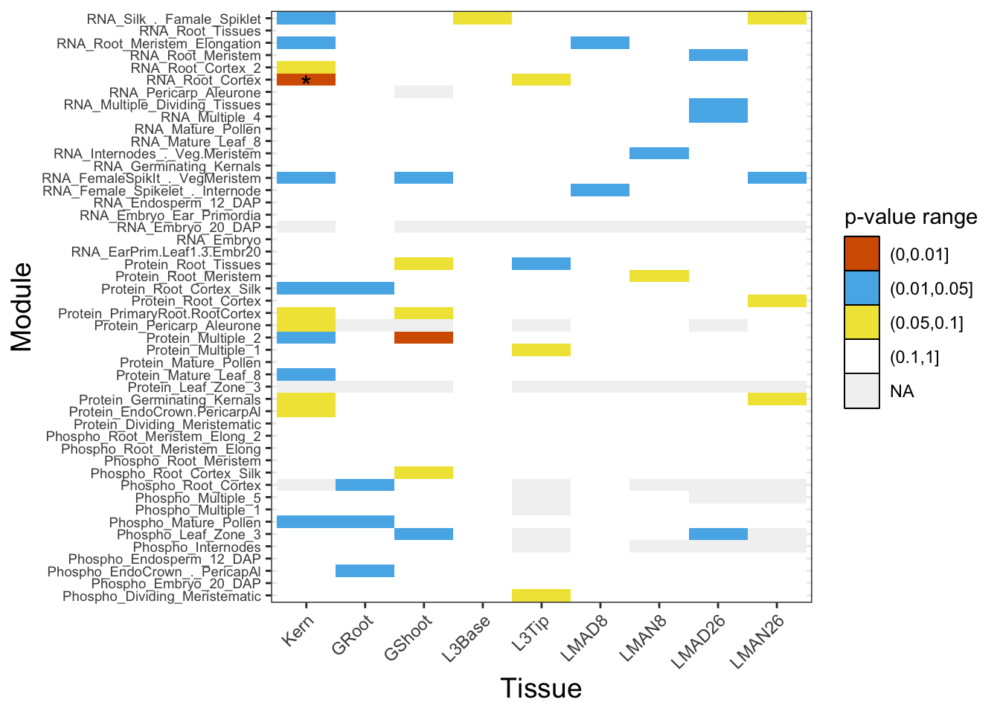
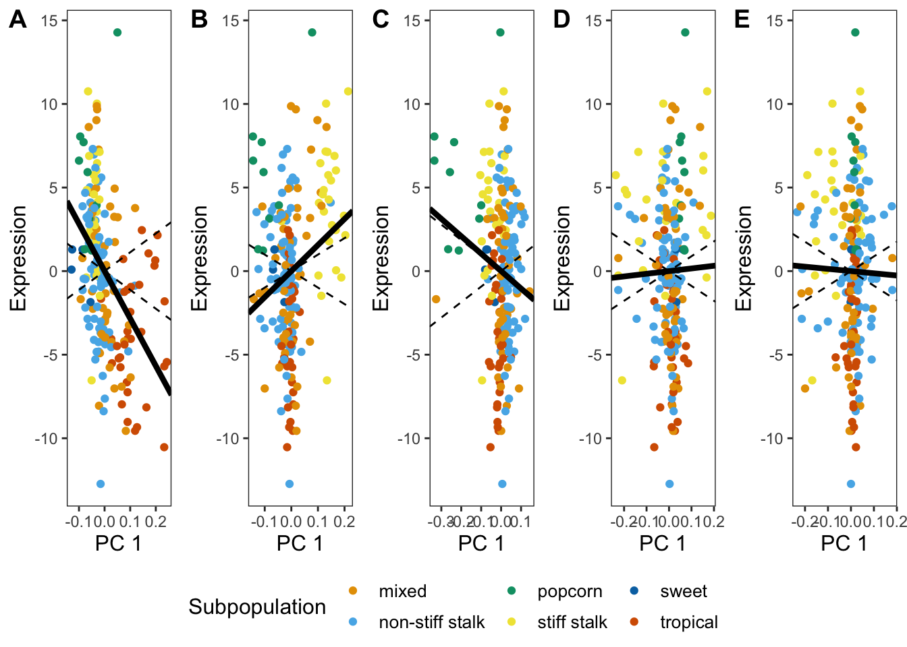

Last updated: 2020-03-16
Checks: 7 0
Knit directory: Blancetal/analysis/
This reproducible R Markdown analysis was created with workflowr (version 1.6.0). The Checks tab describes the reproducibility checks that were applied when the results were created. The Past versions tab lists the development history.
Great! Since the R Markdown file has been committed to the Git repository, you know the exact version of the code that produced these results.
Great job! The global environment was empty. Objects defined in the global environment can affect the analysis in your R Markdown file in unknown ways. For reproduciblity it’s best to always run the code in an empty environment.
The command set.seed(20200217) was run prior to running the code in the R Markdown file. Setting a seed ensures that any results that rely on randomness, e.g. subsampling or permutations, are reproducible.
Great job! Recording the operating system, R version, and package versions is critical for reproducibility.
Nice! There were no cached chunks for this analysis, so you can be confident that you successfully produced the results during this run.
Great job! Using relative paths to the files within your workflowr project makes it easier to run your code on other machines.
Great! You are using Git for version control. Tracking code development and connecting the code version to the results is critical for reproducibility. The version displayed above was the version of the Git repository at the time these results were generated.
Note that you need to be careful to ensure that all relevant files for the analysis have been committed to Git prior to generating the results (you can use wflow_publish or wflow_git_commit). workflowr only checks the R Markdown file, but you know if there are other scripts or data files that it depends on. Below is the status of the Git repository when the results were generated:
Ignored files:
Ignored: .DS_Store
Ignored: .RData
Ignored: .Rhistory
Ignored: .Rproj.user/
Ignored: data/.DS_Store
Ignored: output/.DS_Store
Ignored: output/Identifying_Selected_Genes/.DS_Store
Ignored: output/Selection_on_Expression_of_Cold_Response_Genes/.DS_Store
Ignored: output/Selection_on_expression_of_coexpression_clusters/.DS_Store
Note that any generated files, e.g. HTML, png, CSS, etc., are not included in this status report because it is ok for generated content to have uncommitted changes.
These are the previous versions of the R Markdown and HTML files. If you’ve configured a remote Git repository (see ?wflow_git_remote), click on the hyperlinks in the table below to view them.
| File | Version | Author | Date | Message |
|---|---|---|---|---|
| Rmd | df4fe40 | jgblanc | 2020-03-16 | added more pvals |
| Rmd | 2cb89cd | jgblanc | 2020-03-13 | adding coexpression stuff |
Here is the code to reproduce figure 4 and figure 5.
For this analysis we want to test for selection within specific coexpression modules. We used coexpression modules from Walley et al. (2016) who used weight gene coexpression network analysis (WGCNA) to to group together genes that were similarly expressed in at least 4 tissues in one maize inbred line. Their analysis resulted in 66 co-expression networks. Below we will load their co-expression networks and select all the clusters that have at least 100 genes in them.
modules <- read.delim("../data/Modules.txt",na.strings=c("","NA"))
num_genes <- apply(modules, 2, function(x) length(which(!is.na(x))))
num_genes_100 <- which(num_genes >= 100)
modules <- modules[,num_genes_100]We now have 51 modules that have at least 100 genes. We now need to the the names of the genes that we have in out RNA-seq data set. To do this we will read in the header for each of the mean centered expression matrices.
kern_inds <- t(read.table("../data/Mean_centered_expression/Kern.txt", nrows = 1))
gshoot_inds <- t(read.table("../data/Mean_centered_expression/GShoot.txt", nrows = 1))
groot_inds <- t(read.table("../data/Mean_centered_expression/GRoot.txt", nrows = 1))
base_inds <- t(read.table("../data/Mean_centered_expression/L3Base.txt", nrows = 1))
tip_inds <- t(read.table("../data/Mean_centered_expression/L3Tip.txt", nrows = 1))
lmad8_inds <- t(read.table("../data/Mean_centered_expression/LMAD8.txt", nrows = 1))
lman8_inds <- t(read.table("../data/Mean_centered_expression/LMAN8.txt", nrows = 1))
lmad26_inds <- t(read.table("../data/Mean_centered_expression/LMAD26.txt", nrows = 1))
lman26_inds <- t(read.table("../data/Mean_centered_expression/LMAN26.txt", nrows = 1))Now we have the list of gene names in each of the 51 coexpression modules and the name of the genes we have RNA seq data from in each of our nine tissue types. Now we need to find the overlap between our data and the genes in the sub modules. The chuck of code below can be used to get the overlap for any tissue, you just need to change “kern_inds” to be the tissue from above that you are interested in.
tissue_list <- list()
tissue_list_length <- list()
for (i in 1:ncol(modules)) {
lis <- modules[,i]
olap <- Reduce(intersect, list(kern_inds[,1], lis)) # Change tissue
tissue_list[[i]] <- olap
tissue_list_length[[i]] <- length(olap)
}Now the we have the overlap of gene name between our data and the coexpression modules, we now need find the median expression of all the overlap genes in each coexpression cluster. We also only want to keep clusters where the overlap number of genes is at least 50. The code below can be modified for all the tissues, the resulting tables for all nine tissues with the median expression of each coexpression clusters are save in “output/Selection_on_expression_of_coexpression_clusters/”.
exp <- read.table("../data/Raw_expression/Kern.txt") # Change tissue
median_exp <- as.data.frame(matrix(ncol=51, nrow=nrow(exp)))
for (i in 1:ncol(modules)) {
gene <- tissue_list[[i]] # Make sure you ran correct tissue above
avg_exp <- as.data.frame(matrix(nrow=nrow(exp), ncol = length(gene)))
for (k in 1:length(gene)) {
nam <- gene[k]
avg_exp[,k] <- as.numeric(exp[,nam])}
for (j in 1:nrow(exp)){
if (ncol(avg_exp) >= 50){
e <- t(avg_exp[j,])
median_exp[j,i] <- as.numeric(median(e[,1]))}
else {
median_exp[j,i] <- NA}
}
}
#write.table(median_exp,"../output/Selection_on_expression_of_coexpression_clusters/Median_Kern.txt")Great, now we have the median expression value for each cluster. We now want to test for selection on the median values in each cluster. Below is the same code used to identify selected genes, we are simply conducting the test on median expression values in each line instead of a single gene expression in each line. For the test we are combining PC’s 1-5 for the numerator of the selection test first (saved as output/Selection_on_expression_of_coexpression_clusters/tissuename_pvals.txt) and each PC individually next (saved as output/Selection_on_expression_of_coexpression_clusters/tissuename_pvals_ind.txt)
#df1 <- median_exp
df1 <- read.table("../output/Selection_on_expression_of_coexpression_clusters/Median_Kern.txt") #Change tissue
## Mean center the data
for (i in 1:ncol(df1)){
df1[,i] <- scale(df1[,i], scale = FALSE)
}
## Remove last row
df1 <- df1[-nrow(df1),]
## Kinship Matrix for all 207 Kern lines - Change for different tissue
myF <- read.table('../data/Kinship_matrices/F_Kern.txt')
## Get Eigen Values and Vectors
myE <- eigen(myF)
E_vectors <- myE$vectors
E_values <- myE$values
## Make new matrix to collect Z values
df2 <- data.frame(matrix(ncol=ncol(df1), nrow=nrow(df1)))
colnames(df2) <- colnames(df1[1:ncol(df1)])
rownames(df2) <- rownames(df1)
## Calculate Q values by multiplying the mean-centered expression value by each eigen vector
for (i in 1:ncol(df2)) {
mean_centered_data <- t(as.matrix(as.numeric(df1[,i])))
for (k in 1:nrow(df2)){
u <- as.matrix(as.numeric(E_vectors[,k]))
value <- mean_centered_data %*% u
df2[k,i] <- value
}
}
## Get the square root of the Eigen values
de <- data.frame(matrix(nrow = nrow(df1),ncol = 2))
de$Egien_values <- E_values
de$Sqrt_EV <- sqrt(de$Egien_values)
## Calculate C-values by dividing Q values by the square root of the eigen values
df4 <- data.frame(matrix(ncol=ncol(df2),nrow=nrow(df2)))
for (i in 1:ncol(df2)){
df4[,i] <- (df2[,i] / de$Sqrt_EV)
}
## Calculate F-values by dividing variances - for PCs 1-5 combined
F_values <- data.frame(matrix(ncol=ncol(df2), nrow = 1))
for (j in 1:ncol(df2)){
for (i in 1:1){
q <- df4[1:5,j]
t <- df4[11:20,j]
var_q <- mean(q^2)
var_t <- mean(t^2)
F_value <- var_q / var_t
F_values[i,j] <- F_value
}
}
## Calculate P-values from recorded F values
P_values <- data.frame(matrix(ncol=ncol(df2), nrow =1))
for (j in 1:ncol(F_values)){
for (r in 1:1) {
f_stat <- F_values[r, j]
p_value <- pf(q=f_stat, df1=5, df2=10, lower.tail=FALSE)
P_values[r, j] <- p_value
}
}
#write.table(P_values,"../output/Selection_on_expression_of_coexpression_clusters/Kern_pvals.txt")
## Calculate F-values by dividing variances
F_values <- data.frame(matrix(ncol=ncol(df2), nrow = 5))
for (j in 1:ncol(df2)){
for (i in 1:5){
q <- df4[i,j]
t <- df4[11:20,j]
var_q <- (q^2)
var_t <- mean(t^2)
F_value <- var_q / var_t
F_values[i,j] <- F_value
}
}
## Calculate P-values from recorded F values
P_values <- data.frame(matrix(ncol=ncol(df2), nrow =1))
for (j in 1:ncol(F_values)){
for (r in 1:5) {
f_stat <- F_values[r, j]
p_value <- pf(q=f_stat, df1=1, df2=10, lower.tail=FALSE)
P_values[r, j] <- p_value
}
}
#write.table(P_values,"../output/Selection_on_expression_of_coexpression_clusters/Kern_pvals_ind.txt")We now have the raw p-values from the results of our selection test. Let’s plot the figure 4 from the main text using these p-values.
First let’s read in the p-values.
kern <- t(read.table("../output/Selection_on_expression_of_coexpression_clusters/Kern_pvals.txt"))
gshoot <- t(read.table("../output/Selection_on_expression_of_coexpression_clusters/GShoot_pvals.txt"))
groot <- t(read.table("../output/Selection_on_expression_of_coexpression_clusters/GRoot_pvals.txt"))
base <- t(read.table("../output/Selection_on_expression_of_coexpression_clusters/L3Base_pvals.txt"))
tip <- t(read.table("../output/Selection_on_expression_of_coexpression_clusters/L3Tip_pvals.txt"))
lmad8 <- t(read.table("../output/Selection_on_expression_of_coexpression_clusters/LMAD8_pvals.txt"))
lman8 <- t(read.table("../output/Selection_on_expression_of_coexpression_clusters/LMAN8_pvals.txt"))
lmad26 <- t(read.table("../output/Selection_on_expression_of_coexpression_clusters/LMAD26_pvals.txt"))
lman26 <- t(read.table("../output/Selection_on_expression_of_coexpression_clusters/LMAN26_pvals.txt"))We need to add the module names as the row names.
names <- colnames(modules)
rownames(kern) <- names
colnames(kern) <- c("Kern")
rownames(groot) <- names
colnames(groot) <- c("GRoot")
rownames(gshoot) <- names
colnames(gshoot) <- c("GShoot")
rownames(base) <- names
colnames(base) <- c("L3Base")
rownames(tip) <- names
colnames(tip) <- c("L3Tip")
rownames(lmad8) <- names
colnames(lmad8) <- c("LMAD8")
rownames(lman8) <- names
colnames(lman8) <- c("LMAN8")
rownames(lmad26) <- names
colnames(lmad26) <- c("LMAD26")
rownames(lman26) <- names
colnames(lman26) <- c("LMAN26")Now we will check the q-value for each test using the FDR multiple testing correction.
kern_q <- p.adjust(kern, method = "fdr")
gshoot_q <- p.adjust(gshoot, method = "fdr")
groot_q <- p.adjust(groot, method = "fdr")
base_q <- p.adjust(base, method = "fdr")
tip_q <- p.adjust(tip, method = "fdr")
lmad8_q <- p.adjust(lmad8, method = "fdr")
lman8_q <- p.adjust(lman8, method = "fdr")
lmad26_q <- p.adjust(lmad26, method = "fdr")
lman26_q <- p.adjust(lman26, method = "fdr")
dat_q <- cbind(kern_q, groot_q, gshoot_q, base_q, tip_q, lmad8_q, lman8_q, lmad26_q, lman26_q)
dat_q <- as.data.frame(dat_q)
dat_q$Module <- names
dat_q <- dat_q[-c(29, 15, 36), ] # Remove modules that did not have at least 50 genes in any of the tissues
dat_q <- melt(dat_q,id="Module")
colnames(dat_q) <- c("Module", "Tissue", "QVAL")Now we will combine the p-values into one data frame and add a factor column that annotates the p-value range
dat <- cbind(kern, groot, gshoot, base, tip, lmad8, lman8, lmad26, lman26)
dat <- as.data.frame(dat)
dat$Module <- rownames(dat)
dat <- dat[-c(29, 15,36), ] # Remove modules that did not have at least 50 genes in any of the tissues
dat2 <- melt(dat,id="Module")
dat2[is.na(dat2)] <- 1
dat2$cat <- "(0.1,1]"
for (i in 1:nrow(dat2)) {
p <- dat2[i,3]
if (p == 1) {dat2[i,4] <- "NA" }
else if (p > 0.001 & p <= 0.01 ) { dat2[i,4] <- "(0,0.01]"}
else if (p > 0.01 & p <= 0.05) {dat2[i,4] <- "(0.01,0.05]"}
else if (p > 0.05 & p <= 0.1) {dat2[i,4] <- "(0.05,0.1]"}
}Finally we will join the p-value and q-value information and plot the heat map. The asterisks are marking q-value ranges, one module has a q-value below 0.1.
dat3 <- cbind(dat2, dat_q)
dat3$stars <- cut(dat3$QVAL, breaks=c(-Inf, 0.01, 0.05, 0.1, Inf), label=c("***", "**", "*", ""))
dat3 <- dat3[, -5]
pl <- ggplot(data=dat3, aes(x=Module,y=variable, fill = cat)) + geom_tile() + scale_fill_manual(values = c("#D55E00", '#56B4E9', "#F0E442", "white", "gray95"), name = "p-value range") + theme_bw() + xlab("Module") + ylab("Tissue") + theme(axis.text.x = element_text(angle = 45, hjust = 1), axis.text.y = element_text(size = 7),legend.key = element_rect(colour = 'black', size = 0.5), axis.title.y = element_text(size = 14), axis.title.x = element_text(size = 14)) + coord_flip() + geom_text(aes(label=stars), color="black", size=5, nudge_x = -.5)
pl
Finally we will plot the expression plot Median RNA Root Cortex coexpression cluster.
Now we have all the info to make the expression plots. It is important to note that we calculated the \(\text{var}(C_{11:20})\) for this specific module in the kernel tissue when we were doing the selection test above and manually added used it to plot these confidence intervals. The code below can generate the expression plot at best fit line for all tissues and modules but NOT the correct confidence intervals. To plot the correct confidence interval you would need to record the “var_t” value for each module from the code above and plug that into the code below used to calculate “k_plus”.
# PC 1
pop_dat$one <- E_vectors[,1]
lambda <- E_values[1]
k_plus <- 1.96 * sqrt(9.137196 * lambda) # Excpected denominator calculated from script
k_minus <- - k_plus
lR <- lm(pop_dat$RNA_Root_Cortex ~ pop_dat$one)
coeff <- lR$coefficients[[2]]
col <-c('#E69F00', '#56B4E9', "#009E73", "#F0E442", "#0072B2", "#D55E00", "#CC79A7")
pl1 <- ggplot(data=pop_dat, aes(x = one, y= RNA_Root_Cortex , color=Subpopulation)) + scale_colour_manual(values = col, labels=c("mixed", "non-stiff stalk", "popcorn", "stiff stalk", "sweet", "tropical")) + xlab("PC 1") + ylab("Expression") + theme_bw() + theme(panel.grid.major = element_blank(), panel.grid.minor = element_blank(), axis.title.y = element_text(size=12), axis.title.x = element_text(size=12), legend.position = "right", legend.title = element_text(size = 12), legend.text = element_text(size = 10)) + geom_point(size = 1.5) + geom_abline(slope = k_plus, linetype = 2) + geom_abline(slope = coeff, size = 1.5)+ geom_abline(slope = k_minus, linetype = 2)
# PC 2
pop_dat$two <- E_vectors[,2]
lambda <- E_values[2]
k_plus <- 1.96 * sqrt(9.137196 * lambda) # Excpected denominator calculated from script
k_minus <- - k_plus
lR <- lm(pop_dat$RNA_Root_Cortex ~ pop_dat$two)
coeff <- lR$coefficients[[2]]
col <-c('#E69F00', '#56B4E9', "#009E73", "#F0E442", "#0072B2", "#D55E00", "#CC79A7")
pl2 <- ggplot(data=pop_dat, aes(x = two, y= RNA_Root_Cortex , color=Subpopulation)) + scale_colour_manual(values = col, labels=c("mixed", "non-stiff stalk", "popcorn", "stiff stalk", "sweet", "tropical")) + xlab("PC 1") + ylab("Expression") + theme_bw() + theme(panel.grid.major = element_blank(), panel.grid.minor = element_blank(), axis.title.y = element_text(size=12), axis.title.x = element_text(size=12), legend.position = "right", legend.title = element_text(size = 12), legend.text = element_text(size = 10)) + geom_point(size = 1.5) + geom_abline(slope = k_plus, linetype = 2) + geom_abline(slope = coeff, size = 1.5)+ geom_abline(slope = k_minus, linetype = 2)
# PC 3
pop_dat$three <- E_vectors[,3]
lambda <- E_values[3]
k_plus <- 1.96 * sqrt(9.137196 * lambda) # Excpected denominator calculated from script
k_minus <- - k_plus
lR <- lm(pop_dat$RNA_Root_Cortex ~ pop_dat$three)
coeff <- lR$coefficients[[2]]
col <-c('#E69F00', '#56B4E9', "#009E73", "#F0E442", "#0072B2", "#D55E00", "#CC79A7")
pl3 <- ggplot(data=pop_dat, aes(x = three, y= RNA_Root_Cortex , color=Subpopulation)) + scale_colour_manual(values = col, labels=c("mixed", "non-stiff stalk", "popcorn", "stiff stalk", "sweet", "tropical")) + xlab("PC 1") + ylab("Expression") + theme_bw() + theme(panel.grid.major = element_blank(), panel.grid.minor = element_blank(), axis.title.y = element_text(size=12), axis.title.x = element_text(size=12), legend.position = "right", legend.title = element_text(size = 12), legend.text = element_text(size = 10)) + geom_point(size = 1.5) + geom_abline(slope = k_plus, linetype = 2) + geom_abline(slope = coeff, size = 1.5)+ geom_abline(slope = k_minus, linetype = 2)
# PC 4
pop_dat$four <- E_vectors[,4]
lambda <- E_values[4]
k_plus <- 1.96 * sqrt(9.137196 * lambda) # Excpected denominator calculated from script
k_minus <- - k_plus
lR <- lm(pop_dat$RNA_Root_Cortex ~ pop_dat$four)
coeff <- lR$coefficients[[2]]
col <-c('#E69F00', '#56B4E9', "#009E73", "#F0E442", "#0072B2", "#D55E00", "#CC79A7")
pl4 <- ggplot(data=pop_dat, aes(x = four, y= RNA_Root_Cortex , color=Subpopulation)) + scale_colour_manual(values = col, labels=c("mixed", "non-stiff stalk", "popcorn", "stiff stalk", "sweet", "tropical")) + xlab("PC 1") + ylab("Expression") + theme_bw() + theme(panel.grid.major = element_blank(), panel.grid.minor = element_blank(), axis.title.y = element_text(size=12), axis.title.x = element_text(size=12), legend.position = "right", legend.title = element_text(size = 12), legend.text = element_text(size = 10)) + geom_point(size = 1.5) + geom_abline(slope = k_plus, linetype = 2) + geom_abline(slope = coeff, size = 1.5)+ geom_abline(slope = k_minus, linetype = 2)
# PC 5
pop_dat$five <- E_vectors[,5]
lambda <- E_values[5]
k_plus <- 1.96 * sqrt(9.137196 * lambda) # Excpected denominator calculated from script
k_minus <- - k_plus
lR <- lm(pop_dat$RNA_Root_Cortex ~ pop_dat$five)
coeff <- lR$coefficients[[2]]
col <-c('#E69F00', '#56B4E9', "#009E73", "#F0E442", "#0072B2", "#D55E00", "#CC79A7")
pl5 <- ggplot(data=pop_dat, aes(x = five, y= RNA_Root_Cortex , color=Subpopulation)) + scale_colour_manual(values = col, labels=c("mixed", "non-stiff stalk", "popcorn", "stiff stalk", "sweet", "tropical")) + xlab("PC 1") + ylab("Expression") + theme_bw() + theme(panel.grid.major = element_blank(), panel.grid.minor = element_blank(), axis.title.y = element_text(size=12), axis.title.x = element_text(size=12), legend.position = "right", legend.title = element_text(size = 12), legend.text = element_text(size = 10)) + geom_point(size = 1.5) + geom_abline(slope = k_plus, linetype = 2) + geom_abline(slope = coeff, size = 1.5)+ geom_abline(slope = k_minus, linetype = 2)Finally plot them all together! 
sessionInfo()R version 3.6.2 (2019-12-12)
Platform: x86_64-apple-darwin15.6.0 (64-bit)
Running under: macOS High Sierra 10.13.6
Matrix products: default
BLAS: /Library/Frameworks/R.framework/Versions/3.6/Resources/lib/libRblas.0.dylib
LAPACK: /Library/Frameworks/R.framework/Versions/3.6/Resources/lib/libRlapack.dylib
locale:
[1] en_US.UTF-8/en_US.UTF-8/en_US.UTF-8/C/en_US.UTF-8/en_US.UTF-8
attached base packages:
[1] stats graphics grDevices utils datasets methods base
other attached packages:
[1] ggpubr_0.2.5 magrittr_1.5 ggplot2_3.2.1 reshape2_1.4.3
[5] workflowr_1.6.0
loaded via a namespace (and not attached):
[1] Rcpp_1.0.3 compiler_3.6.2 pillar_1.4.3 later_1.0.0
[5] git2r_0.26.1 plyr_1.8.5 tools_3.6.2 digest_0.6.25
[9] evaluate_0.14 lifecycle_0.1.0 tibble_2.1.3 gtable_0.3.0
[13] pkgconfig_2.0.3 rlang_0.4.4 yaml_2.2.1 xfun_0.12
[17] gridExtra_2.3 withr_2.1.2 stringr_1.4.0 dplyr_0.8.4
[21] knitr_1.28 fs_1.3.1 cowplot_1.0.0 rprojroot_1.3-2
[25] grid_3.6.2 tidyselect_1.0.0 glue_1.3.1 R6_2.4.1
[29] rmarkdown_2.1 farver_2.0.3 purrr_0.3.3 whisker_0.4
[33] backports_1.1.5 scales_1.1.0 promises_1.1.0 htmltools_0.4.0
[37] assertthat_0.2.1 colorspace_1.4-1 ggsignif_0.6.0 httpuv_1.5.2
[41] labeling_0.3 stringi_1.4.6 lazyeval_0.2.2 munsell_0.5.0
[45] crayon_1.3.4